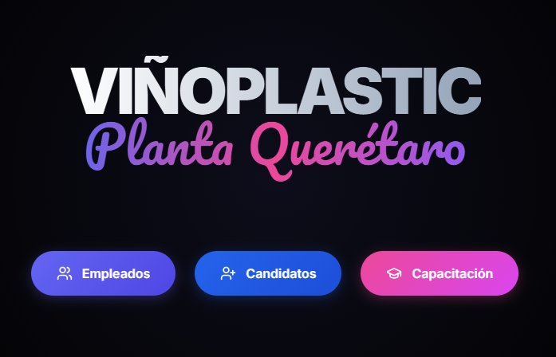
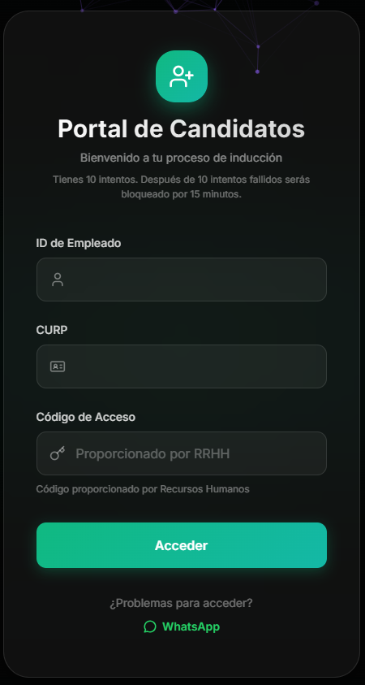
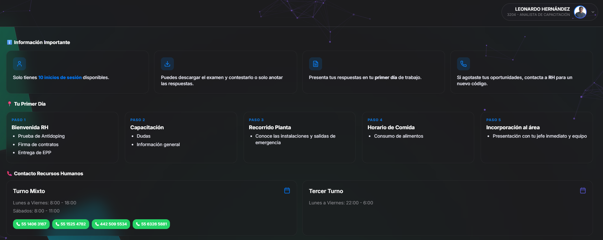
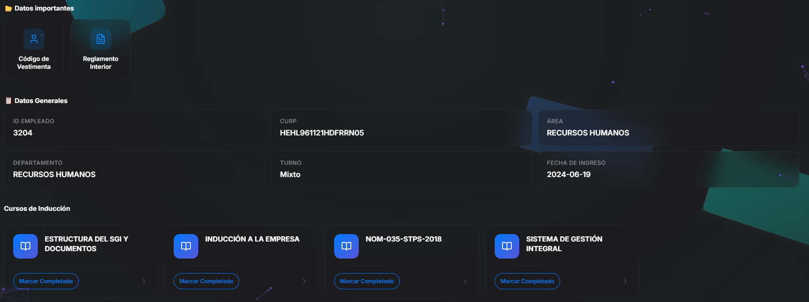

Bienvenido a ViñoPlastic. Sigue estos sencillos pasos para completar tu proceso de inducción inicial desde nuestra plataforma digital.
Ingresa a la página principal:

Una vez en el portal de candidatos, ingresa tus datos:

Al ingresar, verás tu panel principal dividido en secciones clave. Es importante que revises cada una:


Cada curso consta de 4 pasos secuenciales. Debes completar uno para desbloquear el siguiente.